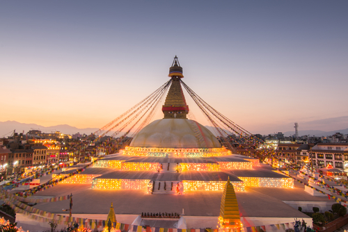
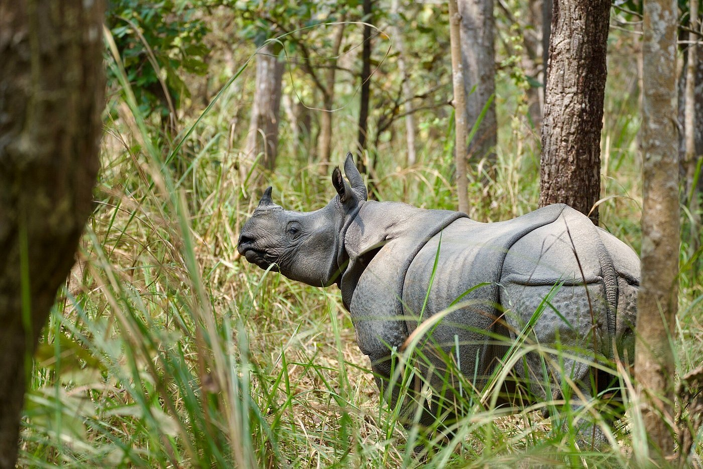
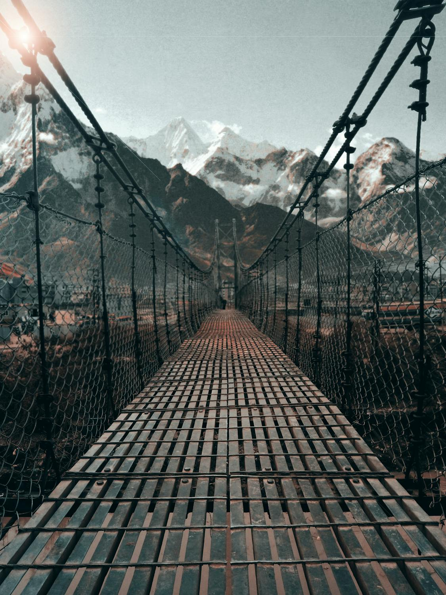
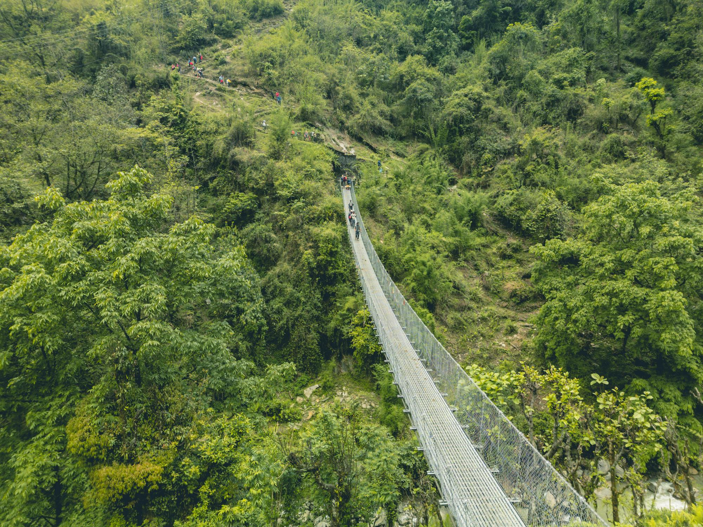

Top Destinations

● Kathmandu
Experience the vibrant culture, ancient temples, and bustling markets of Nepal's capital.

● Pokhara
Known for its stunning lakes and adventure sports, Pokhara is a must-visit for nature lovers.

● Chitwan National Park
Embark on a wildlife safari and spot exotic animals in their natural habitat.

● Mustang
Mustang is famous for its Thakali and Newari food as well as local wines, apples, Tibetan bread, KKhapse, Marpha, dried food and beers.

● Lumbani
Embark on a wildlife safari and spot exotic animals in their natural habitat.

● TriKhandi
Embark on a wildlife safari and spot exotic animals in their natural habitat.
Travel Guide
Nepal, a landlocked nation in South Asia, is renowned for its diverse geography, encompassing fertile plains, forested hills, and eight of the world's ten highest mountains, including Mount Everest. Kathmandu, the capital, serves as the cultural and economic hub. The country is a melting pot of ethnicities and languages, with Nepali as the official language. Historically a Hindu kingdom, Nepal became a federal democratic republic in 2008. Its rich cultural heritage, exemplified by UNESCO World Heritage Sites like the Kathmandu Valley, and natural beauty make it a sought-after destination for travelers.
Travel Blog
Travelers exploring Nepal share inspiring stories and practical tips to enhance your journey. Sue Badyari, CEO of World Expeditions, highlights the Gokyo Lakes/Renjo La trek as an underrated gem, offering breathtaking views of Everest with fewer trekkers. For an ethical approach to trekking, consider World Expeditions' Everest Trek in Comfort, which emphasizes eco-friendly practices and supports local communities. The Common Wanderer blog provides comprehensive guides on various treks, including the Annapurna Circuit and Poon Hill, along with responsible travel tips. Additionally, the Nepal Travel Blog offers firsthand experiences and advice on destinations like Pokhara and cultural insights.